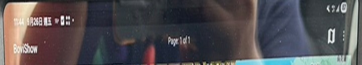
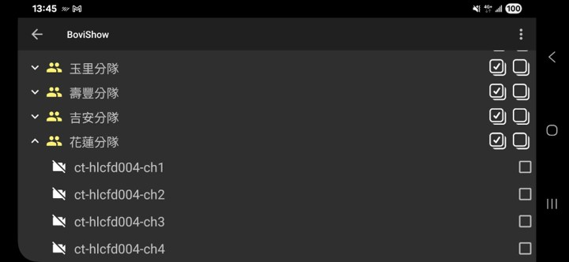
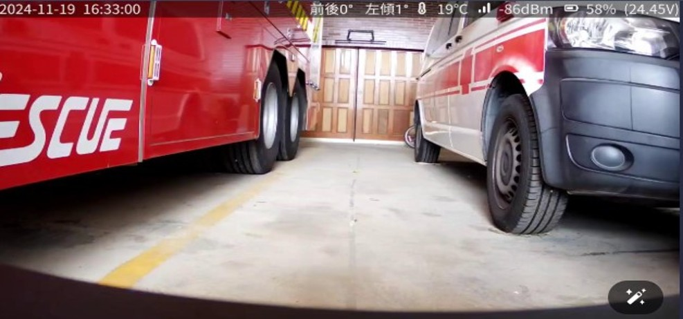

SOP-03：影像故障排除
故障描述：
平板影像無法觀看影像
原因分析：
頻道未勾選，網路訊號不好
項目
內容
一般工具
無
零組件
遙控箱、機器人本體
一、頻道勾選與網路訊號檢查
1. 頻道檢查：
觀察 App 有無 ch1~ch3 畫面。若無，請點擊右上角三個點進入頻道勾選。


2. 訊號觀察：
觀察可見光畫面右上方數值，若數值過低請移動機器人。

二、燈號狀態判斷
指示燈檢查：
觀察鏡頭有無亮紅燈，或熱顯鏡頭後方指示燈狀態。
LED 指示燈狀態
說明
藍燈閃爍
工作正常
粉紅色燈穩定亮起
正在啟動
紅燈穩定亮起
熱像儀故障
綠燈閃爍
已連接到網路
無燈號
未連接至網路
⬅️ 回到目錄首頁